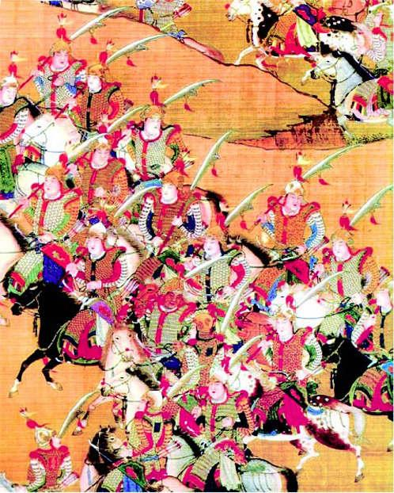
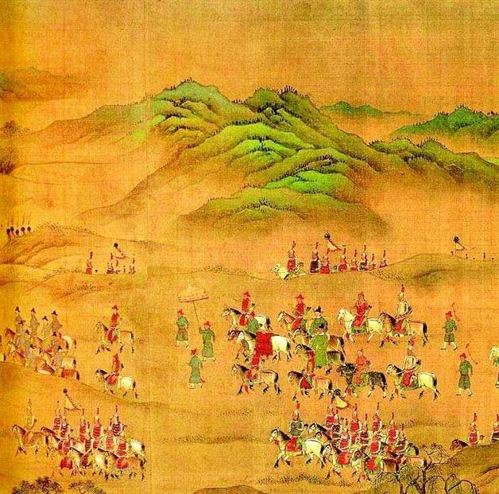

五
单看以上，“设四藩”只是一番兵力布置，看不出有何“改革意义”。需要注意的是，奏疏中“各属之兵马钱粮听其行取。如恢复一城、夺一邑，即属其分界之内”一句。这是具有实质意义的，不过《史忠正公集》所载内容过简，读者难以尽悉其意，倘若参照一下《南渡录》所述，对相关内容何其重要，辄豁然明朗：
一切军民皆听统辖，有司听节制，营卫原存旧兵听归并整理，所辖各将听荐题用，荒芜田地俱听开垦，山泽有利皆听开采。仍听招商收税，以供军前买马置器之用。镇额兵三万，岁供本色米二十万，所收中原土地即归统辖。[23]
这段文字，顾炎武《圣安皇帝本纪》几乎分毫不差，谈迁《国榷》也大体相同。顺便说一下，我推测后二者所述均据《南渡录》。原因有二：一是李清弘光间在南京居要职，《南渡录》中事都是他亲历亲闻；二是《南渡录》成稿应早于《圣安皇帝本纪》和《国榷》，南京城破之后，李清便归隐故乡兴化枣园，杜门著述，顾炎武则参加过一段抗清活动，谈迁《国榷》虽写得早，原稿却于1647年失窃，“又发愤重新编写，一六五三年带稿子到北京又加修订”[24]，定稿起码是1653年以后了。
把《南渡录》的记载逐句读下来，我们得到以下信息：“四藩”被赋予极大权力，可以说军、政、财权集于一身。不单指挥军队，老百姓也归他们管；不单管得了百姓，还管得了地方官；所有原地方部队，都被收编、统一于麾下；有权提名、建议提拔军官，虽然理论上需要督师批准，实际只是履行个手续而已；凡属荒地都可任意开垦，任何矿产都可不加限制地开采；甚至，有商业管理权和征税权，税收不必上缴而留为“军费”；最后还有一句：“所收中原土地即归统辖”，即：但能攻下中原一城一地，就立即、自动、无条件纳入该镇势力范围，而联系上面所准予的诸种权力，其中的诱惑是巨大的。
《圣安皇帝本纪》在“所收中原土地即归统辖”后面，多了一句：
寰宇恢复，爵为上公，与开国元勋同，准世袭。[25]
该句亦见于《国榷》，写做：
寰宇恢复，爵为上公，世袭。[26]
至此，我们才算完整了解“设四藩”方案，也终于接触到它比较核心的地方。不错，它的确是一个务实、周密的军事防卫计划，但这计划的生命力并不取决于态度的务实和设计的周密，而取决于利益与权力的再分配或让步。假如没有后面那种实质内容，计划制订得再好，也引不起任何兴趣。俗话说，肉包子打狗，有去无回。到了明末这种光景，朝廷与军队之间，就是肉包子与狗的关系。不拿出相当的实惠，根本不可能调动军方的“积极性”。
我们不必沉吟措辞是否得当，而可径直确认：“设四藩”差不多等于封了四个独立王国，不妨分别称之为“淮徐国”、“扬滁国”、“凤泗国”、“庐六国”。唐末藩镇军事割据时代又回来了，甚至退回到汉代初年实封异姓王（韩信、英布等）那样的状态。当然，史可法奏疏未有只言片语点破这一点，它好像只是谈论军事布局，但我们看得很清楚，布局是一方面，割据是另一方面——抑或不如说，表面上出于布局，内里是为着安抚军方、努力调动他们保护国家的“积极性”。
这表示，所谓“涖军者不得计饷，计饷者不得涖军；节制者不得操兵，操兵者不得节制”、“文武分途”那套祖制，已徒具虚名。四藩尽有其兵、尽有其地、尽有其民，可在境内行使一切权力，是某一区域内绝对统治者。而且，不单现在明确划分好的区域归其所有，将来一旦征服新地，也通通作为奖赏装入他的腰包，完全是分茅裂土的架势。

明军军容。
这支明军，软甲肥马，盔刃铮然，装备相当精良。虽然后期明军缺饷严重、纪律很坏、屡尝败绩，但明军战斗力是否如表现的那么不堪一击，也值得考虑。《祁彪佳日记》所述证明，即便在弘光间，明军练兵标准仍然不低。
崇祯间重要将领唐通。
唐通，陕西泾阳人。时为宣化总兵、密云总兵，而先降李自成，后降多尔衮，比较典型地反映了明代武人“轻去就，缓则受吾节制，指顾簿书之间，急则拥兵自重”的特征。
明军发兵图。
文职统帅端坐帐中，发号施令，而大将及其所属，须跪接军令。图中帐内文官画得特别高大，并非偶然，实际是对明代以文抑武、视武人为豪猪健狗之徒军事制度的形象说明。
明军作战图。
明军由总兵官担任方面军司令，投入具体战斗。明初，为使将领与兵权分离，对总兵官采取临时指派的办法，遇事佩印出战，事毕缴还，故称“充总兵官”。后演为常任，而再派文官督抚节制之，形成督抚＋总兵格局。史可法开府扬州，任务就是督师四镇（四大总兵）。

行军图。
明军行进队列，文官统帅居中，武人前后左右簇拥护卫，“右文主义”一目了然。
明朝二百多年来的以文抑武，以及军队在国家政治中的工具化和边缘化，到此宣告瓦解。或者说，最终证实那套办法没有真正解决国家与武力这一难题；它一度行之有效，只是因处和平现实，未经真正考验。基本上，崇祯朝十七年都在证明这一点——剿“贼”也好，平“虏”也罢，所以节节失利，追根寻源是军事制度无法适应实战需要。统治稳固时，它能够防范养虎遗患之弊，抑阻武力觊觎威柄的风险。但好事岂能全占？一俟“有事”，却发现并非“养兵千日”就可“用于一时”，从“养”到“用”的衔接与转换，有许多因素需要把握、安排，而明朝军事制度显然并未认真、深入、细致处理好这些问题，等到狼烟四起，突然发现自己空养了数百万军队，其实却是个豆腐渣体系，安内攘外，无一堪用；末了，国都沦陷，君被逼死。
这种在战乱时期已被证明全然无效的军事制度，无法再坚持下去。史可法奏疏图变，既迫不得已，也势属必然。然而不幸，仓猝间实际谈不上创新，变是非变不可，却又拿不出新的办法。怎么办？只好悄悄捡起老套子，乞助于祖制所否定甚至是严加防范的藩镇制。计六奇评论说：
愚谓即仿古藩镇法，亦当在大河以北开屯设府，岂堂奥之内而遽以藩篱视之。[27]
他也觉得，现实地看，倒退到“古藩镇法”实属无奈，舍此并无他法可以救急；但他认为，四藩之设起码应在黄河以北，将其置于肘腋之内，太冒险了。这确实是非常要害的问题，后来弘光朝所有苦头都可说由此而来。不过，这点道理史可法不可能不明白，也不会未曾虑到，然而，一来南京防卫乃当务之急，二来若真将四藩设在黄河以北，可能吗？哪位大帅将欣然受命？这里要捎带批评一下黄宗羲。谈到“设四藩”，他对史可法很不以为然，说“君子知其无能为矣”[28]，这固然出于嫉恶如仇（参酌他对赳赳武夫冠以“豪猪健狗之徒，不识礼义”的看法），但和历来“清流”一样：不在其位、而谋其政。人常说“当局者迷，旁观者清”，其实刚好相反，当局者的认识较旁观者一般都来得更清醒、准确。旁观者不担责任，话总能说得最漂亮，当局者却不能以漂亮为念，他要审时度势，言行尽量符合实际，还要顾及大局。